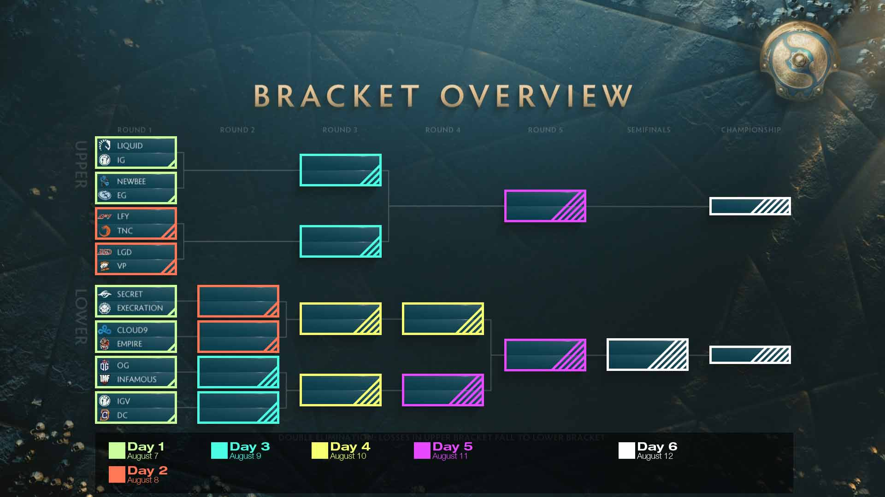
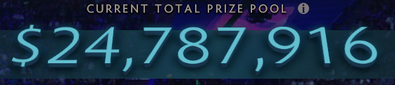

Team Liquid would come into The International 2017 as one of the favorites. For the Group Stage, they would be seeded into Group A alongside other favorites such as Evil Geniuses, LGD Gaming, or Team Secret among others. After a strong start to the Group Stage, Liquid found themselves in a neck-to-neck race with LGD Gaming for the top seed of their group, which Team Liquid finally were able to secure with an overall score of 13-3. This meant that they would be allowed to pick their opponent in the Upper Bracket of the Main Event from the 3rd and 4th placed teams from Group B: Virtus.pro or Invictus Gaming. Unwilling to face the aggressive Russian squad, Team Liquid chose iG as their first opponent.
However, the first series of the main event did not go as planned and Team Liquid dropped down to the Lower Bracket after losing 1-2 to iG. To make it to the Grand Finals, they would have to make a run similar to Digital Chaos's run at The International 2016. Their first opponent in the Lower Bracket would be Team Secret, to whom they lost the first game of the series. Team Liquid found themselves one game away from elimination, but not for the last time at this event. Beating out the surprise contender Team Empire, fellow favorites Virtus.pro and LGD Gaming, Team Liquid managed to reach the Lower Bracket final, where they faced another surprise contender in LGD.Forever Young. LFY had managed to nearly sweep Group B, only dropping two games and hadn't dropped a game on the main stage until the Upper Bracket Final against Newbee. LFY quickly proved themselves a formidable opponent and after the first game of the Lower Bracket final, Team Liquid found themselves once again with their backs against the wall. However, they prevailed yet again and turned the series around on the back of MinD_ContRoL's Nature's Prophet. Team Liquid had reached the Grand Final, where Newbee waited. Team Liquid had never dropped a series to Newbee and this time would be no different: Liquid swept the series 3-0 in dominant fashion, claiming their first Dota Major Championship and becoming the seventh winner of The International and over 10 Million USD in prize money.
This would be the first time that a TI Grand Final would end in a 3-0 sweep as well as the first time a team made up of 5 different nationalities would win the Aegis. Newbee's Faith, who was part of the Invictus Gaming roster that won The International 2012, was also denied his second TI win. Liquid's victory also continued the tradition of the TI winner alternating between Chinese and Western teams.